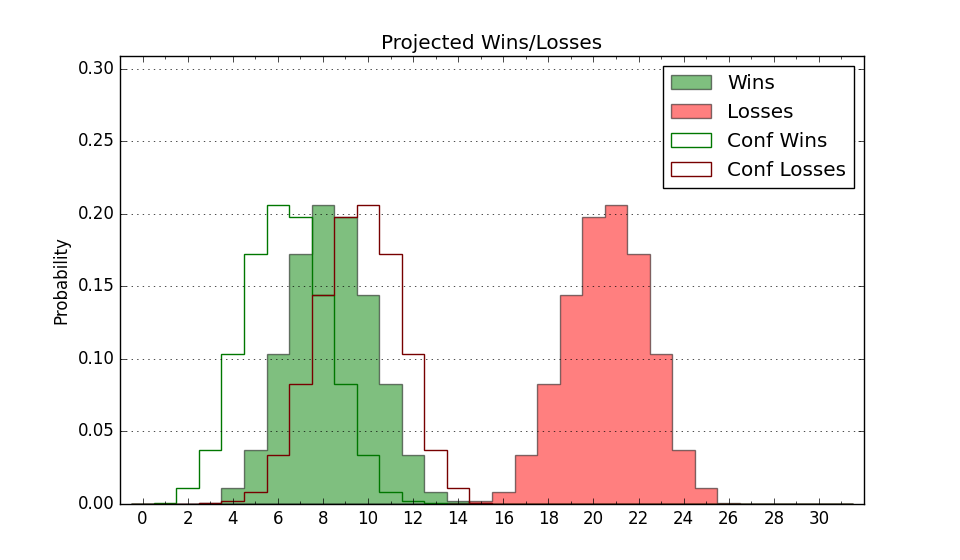

| Home | Game Probabilities | Conferences | Preseason Predictions | Odds Charts | NCAA Tournament |
| City: | Charleston, South Carolina | |
| Conference: | Big South (7th)
| |
| Record: | 1-2 (Conf) 3-13 (Overall) | |
| Ratings: | Comp.: -10.2 (273rd) Net: -10.3 (271st) Off: 100.1 (255th) Def: 110.4 (270th) SoR: 0.0 (168th) |
| Remaining | ||||||
|---|---|---|---|---|---|---|
| Date | Opponent | Win Prob | Pred. | |||
| 1/15 | @ Winthrop (202) | 22.7% | L 74-84 | |||
| 1/18 | Radford (194) | 48.2% | L 72-73 | |||
| 1/22 | @ Presbyterian (268) | 34.1% | L 69-73 | |||
| 1/25 | UNC Asheville (216) | 52.6% | W 77-76 | |||
| 1/29 | @ USC Upstate (343) | 54.8% | W 80-78 | |||
| 2/1 | Longwood (198) | 48.7% | L 73-74 | |||
| 2/5 | Winthrop (202) | 50.0% | L 79-80 | |||
| 2/8 | @ Gardner Webb (213) | 24.5% | L 72-80 | |||
| 2/12 | Presbyterian (268) | 63.8% | W 73-69 | |||
| 2/15 | @ UNC Asheville (216) | 24.6% | L 73-81 | |||
| 2/19 | @ High Point (117) | 11.8% | L 71-85 | |||
| 2/22 | USC Upstate (343) | 80.5% | W 84-74 | |||
| 3/1 | @ Radford (194) | 21.5% | L 68-77 | |||
| Previous | Game Score | |||||
| Date | Opponent | Win Prob | Result | Off | Def | Net |
| 11/4 | @Clemson (42) | 2.8% | L 64-91 | 5.1 | -3.4 | 1.7 |
| 11/7 | @North Florida (246) | 29.4% | L 66-90 | -20.9 | -3.3 | -24.2 |
| 11/15 | (N) UT Rio Grande Valley (193) | 33.5% | L 76-86 | -8.3 | 8.1 | -0.3 |
| 11/16 | (N) VMI (302) | 57.9% | L 69-80 | -14.6 | -11.1 | -25.7 |
| 11/19 | @LSU (60) | 4.3% | L 68-77 | 9.1 | 2.6 | 11.7 |
| 11/23 | Furman (104) | 27.1% | L 46-67 | -30.4 | 10.2 | -20.2 |
| 11/27 | @Georgia Tech (112) | 10.8% | L 67-91 | -3.7 | -6.0 | -9.8 |
| 11/30 | @Miami FL (127) | 12.7% | W 83-79 | 15.5 | 3.4 | 19.0 |
| 12/3 | Tennessee Martin (275) | 65.0% | W 83-68 | 18.8 | 1.0 | 19.8 |
| 12/6 | @Davidson (121) | 12.0% | L 72-73 | 5.0 | 10.5 | 15.5 |
| 12/9 | @South Carolina St. (226) | 26.5% | L 63-82 | -5.7 | -4.7 | -10.4 |
| 12/19 | @North Alabama (157) | 16.2% | L 69-86 | 3.0 | -10.7 | -7.7 |
| 12/22 | @Georgia (36) | 2.5% | L 65-81 | 12.6 | -0.9 | 11.7 |
| 1/2 | Gardner Webb (213) | 52.5% | W 72-63 | -4.9 | 19.2 | 14.3 |
| 1/4 | @Longwood (198) | 21.8% | L 78-83 | 16.6 | -13.6 | 3.1 |
| 1/8 | High Point (117) | 31.3% | L 79-93 | 6.4 | -15.7 | -9.4 |
| Stats & Trends | |||||
|---|---|---|---|---|---|
| Current | Day | Week | Month | Season | |
| Composite | -10.2 | +0.0 | -1.0 | +0.7 | -0.4 |
| Comp Rank | 273 | +2 | -10 | +8 | -8 |
| Net Efficiency | -10.3 | +0.0 | -1.2 | +1.0 | -- |
| Net Rank | 271 | +1 | -9 | +11 | -- |
| Off Efficiency | 100.1 | -0.0 | +1.5 | +2.6 | -- |
| Off Rank | 255 | -1 | +28 | +32 | -- |
| Def Efficiency | 110.4 | +0.0 | -2.7 | -1.6 | -- |
| Def Rank | 270 | -1 | -52 | -19 | -- |
| SoS Rank | 64 | -- | -19 | +5 | -- |
| Exp. Wins | 8.4 | -0.0 | -0.9 | -0.1 | -2.7 |
| Exp. Conf Wins | 6.4 | -0.0 | -0.9 | +0.1 | -0.7 |
| Conf Champ Prob | 0.6 | -0.2 | -3.4 | -1.7 | -3.8 |

| Advanced Stats | ||
|---|---|---|
| Stat | Value | Rank |
| Off Eff FG % | 0.492 | 217 |
| Off Ast Ratio | 0.132 | 257 |
| Off ORB% | 0.288 | 180 |
| Off TO Rate | 0.170 | 308 |
| Off FT Ratio | 0.433 | 24 |
| Def Eff FG % | 0.538 | 287 |
| Def Ast Ratio | 0.146 | 181 |
| Def ORB% | 0.241 | 36 |
| Def TO Rate | 0.111 | 353 |
| Def FT Ratio | 0.323 | 162 |